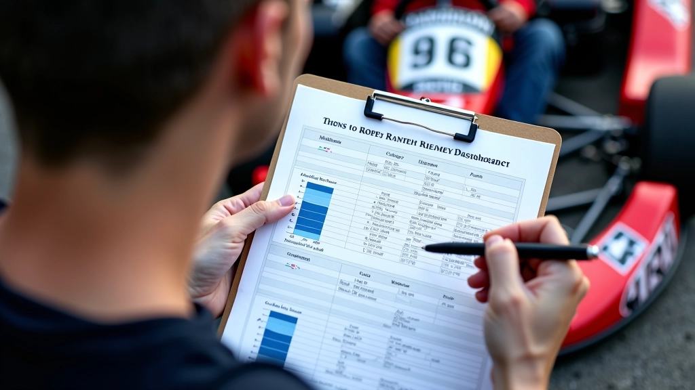
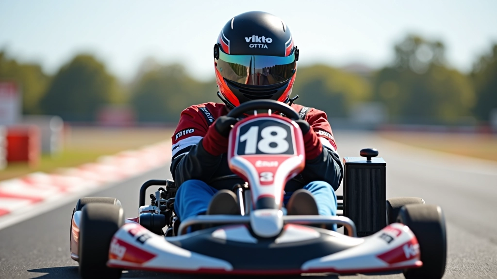

فهم بيانات التلمتري: دليل شامل للمبتدئين
شرح مفصل لكل المعادلات والقراءات الأساسية التي تظهر على شاشات تحليل البيانات
اقرأ المزيداستخدم بيانات التلمتري لتحليل أدائك بموضوعية وفهم الفجوات بينك وبين المنافسين
كل لاعب كارتينج يريد أن يعرف مستواه الحقيقي. لكن بدون بيانات، أنت تتكلم عن الإحساس والتخمين. هذا غير كافي. المقارنة الموضوعية تظهر لك بالضبط أين أنت، وأين يجب أن تركز جهودك.
بيانات التلمتري تعطيك الإجابات. سرعات المنعطفات، توقيت التسارع، نقاط الكبح — كل شيء قابل للقياس. لما تخمن عندما يمكنك أن تعرف؟
لا تحتاج إلى مقارنة كل شيء. ركز على المؤشرات الأساسية التي تعكس الأداء الحقيقي. أولاً، سرعة اللفة الكاملة — هذا هو الرقم الأساسي. لكن السرعة الكاملة لا تخبرك بالقصة كاملة.
انظر إلى سرعات المنعطفات بالتفصيل. إذا كان المنافس أسرع منك في المنعطف 3 بـ 2 كيلومتر في الساعة، فأنت الآن تعرف المشكلة الدقيقة. ليس كل شيء — منعطف واحد. هذا يعني أن خطتك في ذلك المنعطف تحتاج تحسين.

المقارنة مع المنافسين هي أداة تعليمية لفهم أدائك بشكل أفضل. النتائج تختلف بناءً على ظروف السباق، حالة المسار، والعوامل الخارجية. استخدم هذه المعلومات كدليل للتحسن المستمر، وليس كحكم نهائي على مستواك.
الخطوة الأولى: احصل على بيانات المنافس. إما مباشرة من جهاز نفس الشركة، أو من خلال مشاركة البيانات. بعدها، اقتل البيانات الخاصة بك من نفس السباق أو جلسة التدريب.
الخطوة الثانية: افتح برنامج التحليل. اجعل لفتك والمنافس على الشاشة معاً. ابدأ بمقارنة اللفة الكاملة. من يكون أسرع بكم ثانية؟ ثم ادخل في التفاصيل. أين تضيع الوقت بالضبط؟ في أي منعطف تقع متأخراً؟ كم ثانية الفارق؟
تعمق أكثر في موضوع تحليل البيانات والأداء
شرح مفصل لكل المعادلات والقراءات الأساسية التي تظهر على شاشات تحليل البيانات
اقرأ المزيد
تقنيات عملية لاستخدام البيانات في تحسين سرعتك في كل منعطف
اقرأ المزيد
دليل شامل لاختيار جهاز التلمتري المناسب لاحتياجاتك
اقرأ المزيدبعد المقارنة، لا تتوقف عند الأرقام. فسّر ما تعنيه. إذا كنت أبطأ في المنعطف 5، ماذا يخبرك هذا؟ ربما تدخل المنعطف بسرعة عالية جداً ولا تستطيع الحفاظ على السرعة. أو ربما تخرج ببطء. الفرق مهم.
جرّب التحسينات الصغيرة. غيّر نقطة الكبح بمتر واحد. غيّر زاوية الدخول بدرجة واحدة. ثم قارن البيانات مرة أخرى. هل تحسنت السرعة؟ كم ثانية اكتسبت؟ هذا هو المسار الحقيقي للتقدم — تحسينات صغيرة مقاسة بالبيانات.


فريق التحرير والمراجعة
كتبه فريق لاب تايمز للتحرير، متخصصون في توفير إرشادات عملية وسهلة الفهم حول تسجيل البيانات وتحليل اللفات.
المقارنة مع المنافسين ليست عن الهزيمة أو الفوز. إنها عن الفهم. تعرّف على أين أنت بالضبط، وأين تريد أن تكون، وما الخطوات الدقيقة التي ستأخذك هناك.
البيانات لا تكذب. الأرقام واضحة. وعندما تبني تحسيناتك على الأرقام بدلاً من الحدس، ستجد نفسك تتقدم بسرعة. جرّب هذا النهج، وستشعر بالفرق في لفتك القادمة.
العودة إلى الفئة